| Amplifier | Input Resistance | Output Resistance | Voltage Gain |
|---|---|---|---|
| Common Emitter | rπ | ro‖RC ≈ RC | -gmRC |
| Common Emitter with Degen (neglecting ro) | rπ + (β + 1)(RE‖ro) ≈ βRE | RC | -βRCrπ + (β + 1)(RE‖ro) ≈ -RCRE |
| Emitter Follower | rπ + (β + 1)(RE‖ro) ≈ βRE | ro‖RE‖(1gm + RSβ) ≈ 1gm | (β + 1)(RE‖ro)rπ + (β + 1)(RE‖ro) ≈ 1 |
| Common Base | 1gm + RCgmro | ≈ RC‖βro | gmRC |
| Cascode | rπ1 | RC‖(rπ1‖ro1 + ro2 + β2ro2) ≈ RC | -gmRC |
Op-Amp Design Project I
Description
Design Specifications
- \(r_{in}\) > 20 kΩ
- \(r_{out}\) < 50 Ω
- \(a_{v}\) = 1000 ± 5%
- \(V_{SW}\) > 5 V
- Total Harmonic Distortion (THD) < 5% when \(V_{SW}\) = 5 V
- Only 1 10-V power supply (excluding attenuator)
Design Process
Given the performance specifications for the amplifier, we decided to bookend the stages with emitter followers. These configurations provide minimal output resistances relative to the other model types, making it desirable as the last stage, and significant input resistances, making it capable of satisfying the \(r_{in}\) constraint. This relatively high \(r_{in}\), also helps mitigate the effects of interstage loading on the final stage, and the relatively low \(r_{out}\), decreases interstage loading effects when transitioning to the second stage. In retrospect, these stages could have leveraged the 2N3904 NPN transistors to optimize performance given their \({\beta}\) values (200 for NPN vs 150 for PNP under intended operating conditions); however, we opted to use the PNP transistors for these stages for no other reason than consistency.
A key concern when designing the intermediate stages was the effect of interstage loading on the overall gain. The middle two stages were chosen to be some form of common emitter and drove the overall gain of the system as the emitter follower stages only provide a gain of about 1. We initially had the second stage be the common emitter with degeneration and the third as a standard common emitter; however subsequent design optimization and interstage loading comparison indicated that swapping their positions was more ideal and flexible. To minimize power consumption, the collectors were targeted to run with a 1 mA current through them. Using the relationship that the current through the collector is about equal to the current through the emitter, we could tackle more aspects of the overall design. Resistors were the most fluid and interchangeable factor. Selecting reasonably-sized emitter resistors could help us determine which voltage should be at the top of the node. Using a \(V_{BEON}\) of 0.7 for the NPN transistors and understanding which voltage should be at the top of the emitter node, we could find the base voltage and the general relationship between the biasing resistors. With a known beta and collector current, we could leverage Equation 1 to find out how big we should make these resistors.
\[ {\beta}*I_{B} = I_{C} \tag{1} \]
Making the resistors too small would mean that the current stolen by the base was negligible and reduce the droopiness of the voltage, but it would increase the power consumption. Making the resistors too large would reduce current, increasing the proportion of current stolen by the base, and impact the output voltage. Generally, we tried to stick to keeping the biasing network below 100 kΩ, but the last stage required us to modify this constraint to make sure that our analytical, simulation, and measured parameters were all simultaneously within specification.
To make the gain more achievable an attenuating circuit was used to decrease a 100 mV peak-to-peak input signal to 1 mV, prior to the amplifier. The attenuator included two resistor divider networks, with the second divider experiencing some loading from the first. This network fed into a dual-rail op-amp in unity gain to reduce signal noise.
To reduce interstage loading, the input resistance for each subsequent stage aimed to be at least one order of magnitude higher than the output resistance from the previous. The analytical approximations used to determine analytical performance and drive the design are present in Table 1. The \(r_{in}\) values were modified to account for the biaising network, and the r0 resistor was assumed to be significantly large with minimal impact on performance.
The design process proceeded by first designing the analytical aspects, using equations, relationships, and intuition to understand the general layout and components necessary to meet the performance specifications. The resistor choices at the biasing point, the collector, and the emitter were the primary vehicles for modifying amplifier designs. Once all specifications were met analytically, we transitioned to the simulation phase where we conducted DC simulations to verify our bias points, AC simulations to verify our amplifier gain, and then transient simulations to verify the shape and voltage swing of the circuit. We tested each stage individually to isolate any problematic parts, then tested the entire amplifier as a whole to ensure the all specifications were met. After these simulations, we used the transient behavior to validate \(r_{in}\), \(r_{out}\), and the Total Harmonic Distortion. After the simulations were all within specifications, we mirrored that process with the physical implementations and measurements. Any necessary design tweaks revealed in later stages of the design, prompted a reset, returning to the analytical components and climbing our way back again.
Figure 1 below showcases the final design decisions that satisfy all project specifications, accounting for interstage loading effects.
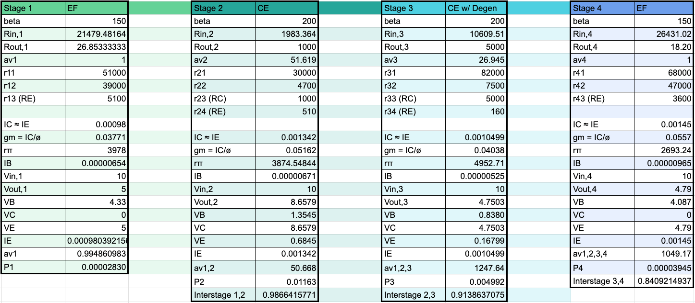
Attenuator Design
The attenuator was designed with two cascading voltage dividers to convert a 100-mV peak-to-peak signal into a 1-mV sinusoid. Resistor values for the second divider account for the loading effects introduced by the first. The attenuator also leverages an TL081 op-amp wired in unity gain to serve as a buffer, isolating the amplifier from undesireable loading. A 51 \({\ohm}\) resistor was placed at the output of the op-amp to mimick the source resistance provided by the oscilloscope’s wave generator.
Resistor values for the attenuator were selected carefully to preserve the ratio determined in the figure above and fall within standard resistances.
Schematics and Circuit
The full circuit with appropriate values is realized in Figure 3.

An abstracted amplifier model is also provided in Figure 4 to better visualize key design parameters and the interstage loading between transistor stages.

The circuit model from Figure 3 was translated into LT Spice to validate specification satsifaction prior to physical implementation. Each stage was segmented into separate blocks, connected with AC coupling capacitors, to allow for accelerated error isolation. The full model is showcased in Figure 5 and the
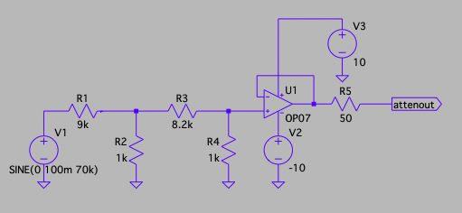
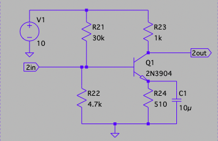
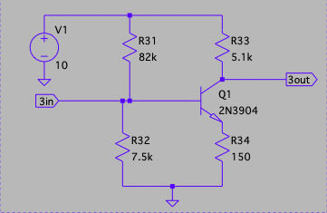
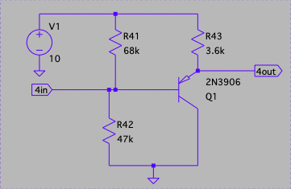
Figure X below illustrates the materialized circuit implementation. BJT terminals were placed at every other row to mitigate parasitic breadboard capacitance. Decoupling capacitors were placed at the breadboard rails to stabilize the power supply and minimize coupling feedback between each amplifier stage.
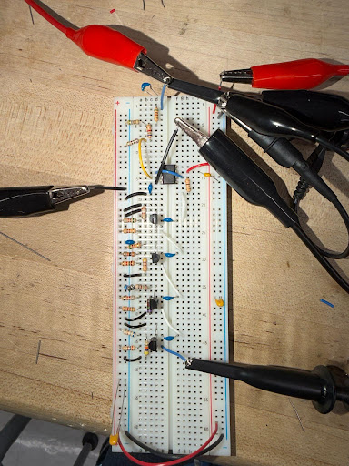
Circuit Operation
The DC bias points at the base, emitter, and collector of each transistor were validated with a multimeter. Prior to measuring voltage swing, total harmonic distortion, and small signal parameters, proper amplification was confirmed with oscilloscope measurements. Figure X below shows a 1 mV peak-to-peak input scaled to a 1.05 V output, indicating proper voltage gain with spec.
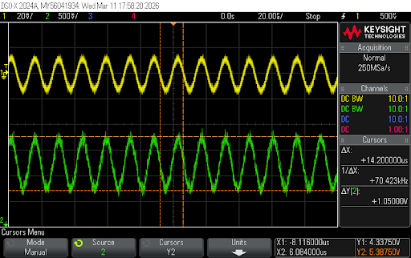
Input Resistance
Analytical
The amplifier’s input resistance depends solely on the input resistance characterizing the first stage of the design. The general \(r_{in}\) expression for the emitter follower outlined in Table 1 was weighted in conjunction with the biasing resistor network at the base node (\(R_{11}\) and \(R_{12}\)) by combining these elements in parallel. The equivalent resistance of about 21.5 \({k\ohm}\) represents the analytical input resistance.
Simulated
Determining the simulated input test voltage required applying a test 1 V peak-to-peak test voltage AC-coupled to the input of the first stage. The attenuator was omitted in this process; however, the 50 \({\ohm}\) sense resistor was included. The node at the exit terminal of this resistor, labeled \(v_{in}\) in Figure X below, was probed to record the current flowing into the amplifier and the voltage at the input. By rearranging Ohm’s Law and plugging in these values, the simulated input resistance was calculated.
The recorded \(v_{in}\) and \(i_{in}\) at the labeled node were 1 V and 48 µA, respectively, indicating an input resistance of 20.8 \({k\ohm}\). While the ideal nature of this simulation enables high fidelity in the recorded output (especially given its congruence with the analytical calculation), better practice would include using a sense resistor closer to the estimated \(r_{in}\) value or AC-coupling a test current source and probing for the input voltage.
Measured
The setup for the experimental input resistance sought to emulate the same configuration
Output Resistance
Analytical
The output resistance for the amplifier is characterized by its final stage (an emitter follower). The \(\frac{1}{g_{m}}\) approximation listed in Table 1 was used to provide an analytical estimate for this specification. As indicated in Figure 1, the calculated \(r_{out}\) is 18.2 \({\ohm}\) with this approximation.
Simulated
Measured
Voltage Gain and Band Pass
Analytical
ANALYTICAL VOLTAGE GAIN CALCULATIONS
Simulated
**Talk about how we measured the AC gains for each signal individually and only the entire gain thing is shown in the figure below.
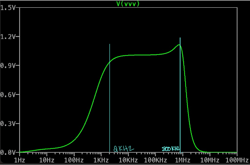
Measured
To generate the magnitude Bode plot for the physical design, a 1 mV peak-to-peak sinusoidal input was fed into the first stage of the amplifier and swept across multiple orders of magnitudes of frequencies. This procedure revealed the amplifier’s low and high cutoff frequencies (about 2.5 kHz and 800 kHz, respectively) and confirmed the gain recorded in FIGURE FROM CIRCUIT OPERATION #.
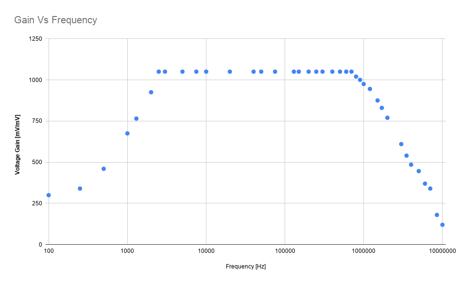
Both the simulated and physical frequency responses agree on corner frequencies and present voltage gains within spec and within 10 percent of each other. Notably, the resonant peak from the AC simulation is absent in the physical representation. This behavior may stem from increased damping from real components or capacitive and resistive loading from the 10X scope probe for which the idealized simulation does not account.
Voltage Swing
\[ V_{SW} = 2*min(V_{CC} - V_{OUT}, V_{OUT} - V_{C, Stage 4} - V_{CESAT})\tag{2} \]
Total Harmonic Distortion
The primary purpose of this linear amplifier is to faithfully preserve the characteristics of the input sinusoid, only scaling its amplitude. Nonlinearities within the circuit’s transfer characteristics introduce additional harmonic contributions that contaminate the output signal. Equation 3 below yields a ratio indicating how significant these higher harmonics are relative to the fundamental component. As indicated by the project specificaitons, THD measurements were extrapolated at a 5-V voltage swing. \[ THD = \sqrt{\frac{V_{2}^2 + V_{3}^2 + V_{4}^2 + ...}{V_{1}^2}}\tag{3} \]
Simulated
The amplifier’s simulated total harmonic distortion was extracted by running the Fourier command after executing the transient response function. Figure X below illustrates the resulting FFT spectra, and the THD percentage calculated internally within LT Spice.
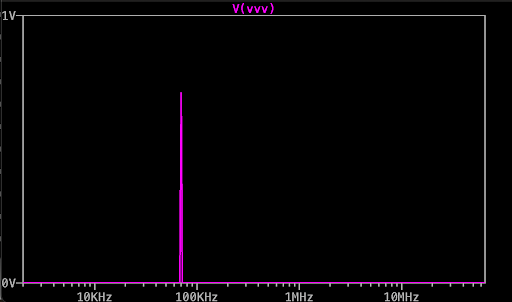
Simulations yielded a THD of 0.1747% with a clear dominant peak at the 70 kHz operating frequency and minimal harmonic contributions.
Measured
The total harmonic distortion was experimentally determined by employing the oscilloscope’s FFT function on the output sinusoid. The peaks of the fundamental component and perceptible higher-order harmonics were recorded with the scope’s cursors, and Equation 3 was subsequently enacted.
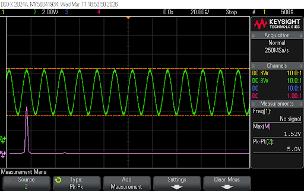
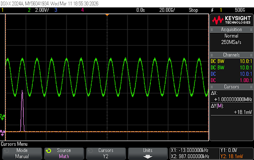
With a \(V_{1}\) of 1.53 V, a \(V_{2}\) of 0.0181 V, and negligible harmonics beyond that, the experimental THD for the full circuit is 1.183% at a 5-Volt swing. While deviating considerably from the modest simulated figure, this can likely be attributed to the additional noise and nonidealities introduced by real components. This value was determined at 70 kHz, but further testing at other frequencies within the passband may uncover additional interesting insights.
Power Consumption
Analytical
The analytical power consumption was determined with Equation 4. Given the negligibile current drawn by the base terminal of BJTs, the collector current for each is representative of the total current flowing through that stage. With a known supply voltage, output (collector) voltage, and collector resistor, these currents could be analytically determined with Ohm’s Law.
\[
Power = V_{CC}*(I_{C1} + I_{C2} + I_{C3} + I_{C4})\tag{4}
\] The quiescent current from the TCP081CP-based attenuator is about 1.4 mA, extrapolating from the manufacturer’s datasheet. With \(\pm\) 10 V supplied at the rails, the attenuator contributes about 28 mW of power consumption. Power drawn by the resistor divider network is assumed to be neglibible and is not included in the overall analytical figure.
Since the attenuation component is treated as an auxiliary component to the amplifier, its power contributions, while worth noting, are not included in the reported power consumption value.
Simulated
Simulated power consumption determination mirrored the DC bias point confirmation process. The DC operating point function (.op) also incorporates current measurements. Summing the current at each collector and multiplying that figure by \(V_{CC}\), similar to the analytical process, yielded the circuit’s simulated power consumption.
Measured
Ohm’s Law was also enacted when experimentally determining the overall power consumption. With a multimeter, exact collector resistance values were recorded and the voltage drop across them were also noted. With a known supply voltage and extropolated current figures, Equation 4 was enacted once more.
Analytical, simulated, and experimental power consumption metrics are listed in Table 2 within the Results and Discussion section.
Results and Discussion
| Parameter | Analytical | Simulated | Measured |
|---|---|---|---|
| Voltage Gain [V/V] | 1049.17 | 1010 | 1050 |
| Input Resistance [kΩ] | 21.5 | 20.8 | 20.8 |
| Output Resistance [Ω] | 17.95 | 17.86 | 22.3 |
| Output Voltage Swing [V] | 9.17 | 8.5 | 8.8 |
| THD at 5 V Output Swing [%] | N/A | 0.17 | 1.183 |
| Low Corner Frequency [kHz] | N/A | 2 | 2.5 |
| High Corner Frequency [kHz] | N/A | 800 | 800 |
| Power Consumption [mW] | 48.2 | 50.5 | 52 |
| Stage 1 Collector Current [mA] | 0.9803 | 0.959 | 0.961 |
| Stage 2 Collector Current [mA] | 1.342 | 1.28 | 1.283 |
| Stage 3 Collector Current [mA] | 1.05 | 0.112 | 0.9616 |
| Stage 4 Collector Curent [mA] | 1.45 | 1.55 | 1.421 |